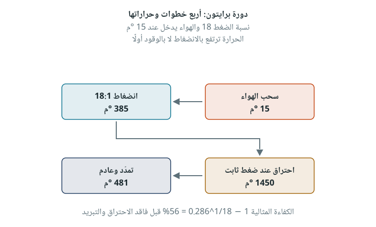

التوربين الغازي
Gas Turbine
محرّك دوّار يضغط الهواء ثم يحرق الوقود فيه ويتمدّد الغاز الساخن عبر شفرات تُدير الضاغط والمولّد. يعمل على دورة برايتون، وكفاءته المثالية تعتمد على نسبة الضغط: 56% عند نسبة 18.
التوربين الغازي محرّك احتراق دوّار: يضغط الهواء، يُحرَق الوقود في الهواء المضغوط، ثم يتمدّد الغاز الساخن عبر مراحل توربين تُدير الضاغط والمولّد معًا. دورة عمله هي برايتون: انضغاط أدياباتي، احتراق عند ضغط شبه ثابت، تمدّد أدياباتي، وطرد حرارة إلى الجو.
في الدورة المفتوحة يتخلّص الغاز العادم من حرارته إلى الجو، وهذا أكبر فاقد فيها. الدورة المركبة تستعيد هذه الحرارة في غلاية استعادة تُنتج بخارًا يدير توربينًا بخاريًّا ثانيًا، فترتفع الكفاءة من نحو 40% في الدورة البسيطة إلى 60% وأكثر.
كيف تعمل الظاهرة؟
الضاغط يرفع ضغط الهواء إلى 18 ضعفًا في الآلات الثقيلة، فترتفع حرارته أدياباتيًّا من 15 إلى نحو 385 °م دون إضافة أي حرارة من خارج. يُحرق الغاز بعد ذلك في غرفة الاحتراق عند ضغط شبه ثابت، فترتفع الحرارة إلى 1,450 °م. الغاز الساخن يتمدّد في التوربين ويُنتج عملًا يفوق عمل الضاغط، لأن حرارته أعلى وكتلته المارّة أكبر بعد الاحتراق، والفرق بين العملين هو العمل الصافي. كل تحسين في حرارة الدخول يُنتج عملًا أكبر، ولهذا تُطوَّر سبائك التوربين وتبريد الشفرات بالهواء أو بالبخار.
العلاقة بالأرقام
الكفاءة المثالية لدورة برايتون: η = 1 − 1/rp^((γ−1)/γ). بنسبة ضغط rp = 18 وγ = 1.4 يكون 1 − 1/2.284 = 56%. عمليًّا تُهدَر الضغوط وفاقد الاحتراق والتبريد، فتبلغ الكفاءة الحرارية الفعلية نحو 40%. حصّة الضاغط من عمل التوربين 38%: عمل الضاغط 372 kJ/kg وعمل التوربين 973 kJ/kg عند هواء 288 K، أي أن أكثر من ثلث ما تنتجه الشفرات يعود لتشغيل الضاغط.
مفاهيم متقاربة
يُخلط بين التوربين الغازي والتوربين البخاري: الأول يتمدّد فيه غاز الاحتراق نفسه، والثاني يعمل ببخار ماء يُولَّد في غلاية منفصلة. ويُخلط بين الدورة البسيطة والمركبة فتُنسب إلى التوربين الغازي كفاءة 60% وهي للدورة المركبة كاملة. ويُخلط بين نسبة الضغط ونسبة التمدّد: في الدورة المثالية تتساويان عند غاز مثالي، أما في الآلة الحقيقية فتختلفان بسبب فاقد الضغط وإضافة الكتلة في الاحتراق.
حدود التطبيق
نموذج برايتون المثالي يفترض غازًا مثاليًّا بسعات حرارية ثابتة، وهذا خطأ ملحوظ عند 1,450 °م حيث تتغير Cp مع الحرارة. ولا يمثّل فاقد الضغط في المجرّى، ولا تبريد الشفرات الذي يستهلك جزءًا من هواء الضاغط فيقلّل العمل الصافي. ولا يصلح لتوقّع الكفاءة عند الأحمال الجزئية، حيث تنخفض بشدة لابتعاد عمل الضاغط والتوربين عن نقطة التصميم. لذلك تُبنى خرائط الأداء تجريبيًّا لكل آلة، لا من الصيغة المثالية.

| الكمية | القيمة | المصدر |
|---|---|---|
| نسبة ضغط التوربين الثقيل | 18 نسبة | [1] |
| الكفاءة المثالية عند نسبة 18 | 56 % | [1] |
| حصّة الضاغط من عمل التوربين | 38 % | [1] |
| حرارة الهواء بعد الضاغط | 385 °م | [1] |
المصادر
- 1 Brayton Cycle — Gas Turbine Engine — NASA Glenn Research Center. www1.grc.nasa.gov/beginners-guide-to-aeronautics/turbine-engines/ · اطُّلع عليه 2026-11-16
- 2 How electricity is generated — U.S. Energy Information Administration. www.eia.gov/energyexplained/electricity/how-electricity-is-generated.php · اطُّلع عليه 2026-11-16
- 3 Heat Engines — OpenStax, University Physics Volume 2. openstax.org/books/university-physics-volume-2/pages/4-2-heat-engines · اطُّلع عليه 2026-11-16
استشهد بهذا المصطلح
الصيغتان مبنيتان من بيانات الصفحة نفسها: العنوان والتاريخ ورابط النسخة المنشورة.
التوربين الغازي — Gas Turbine. (2026). ديوان المعرفة — انفراد. https://infiradev.com/diwan/terms/gas-turbine.html
@misc{gas-turbine2026,
title = {التوربين الغازي},
titleaddon = {Gas Turbine},
howpublished = {{ديوان المعرفة — انفراد} — مرجع علمي عربي},
year = {2026},
url = {https://infiradev.com/diwan/terms/gas-turbine.html},
urldate = {2026-11-16},
note = {مراجعة علمية: مراجعة آلية — ديوان المعرفة (روابط المصادر + عقد المحتوى + وجود الرسم) 2026-11-16}
}
راجعه: مراجعة آلية — ديوان المعرفة (روابط المصادر + عقد المحتوى + وجود الرسم) 2026-11-16 · 2026-11-16 · آخر تحديث 2026-11-16